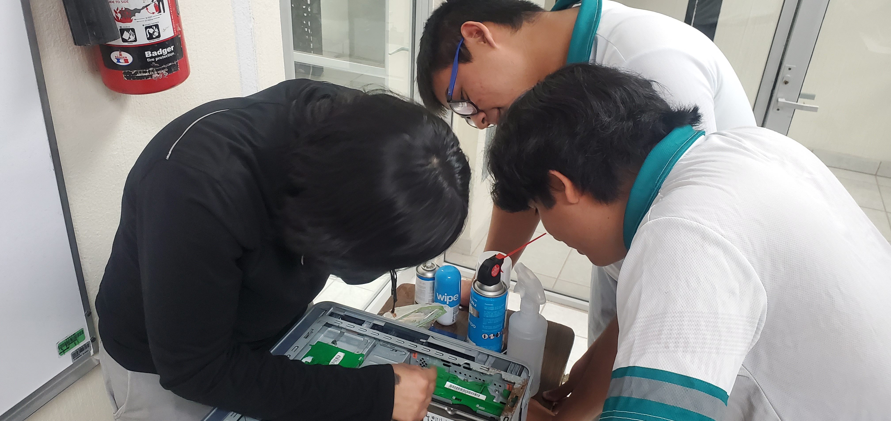
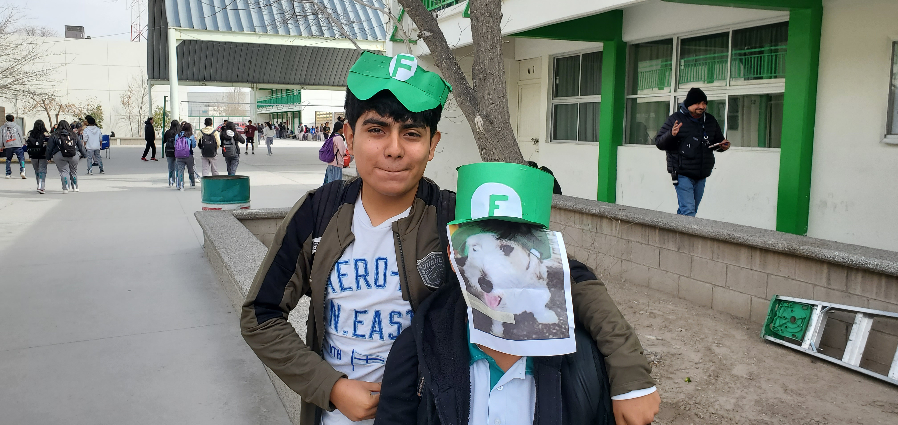

¿QUE RECORDAMOS?
Otro recuerdo que hicimos en nuestra capacitacion fue el mantenimineto de la computadora:
Vimos la limpieza de este y como hacerla de la forma adecuada para evitar que vaya a
descomponerse.

Algo que quedo dentro de mi cabeza fue cuando debimos hacer una presentacion de
influencer o distintas celebridades de internet. Algunas personas lo hicieron del
Temcach, Fedelobo, ETC. Pero nosotros lo hicimos del Youtuber Fernanfloo. Hicimos
con todos sus personajes que lo rodean. Como su perro Curly, su consola de
videojuegos, ETC.
